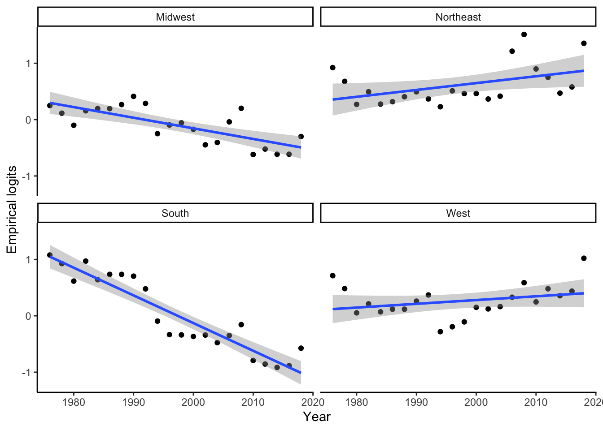
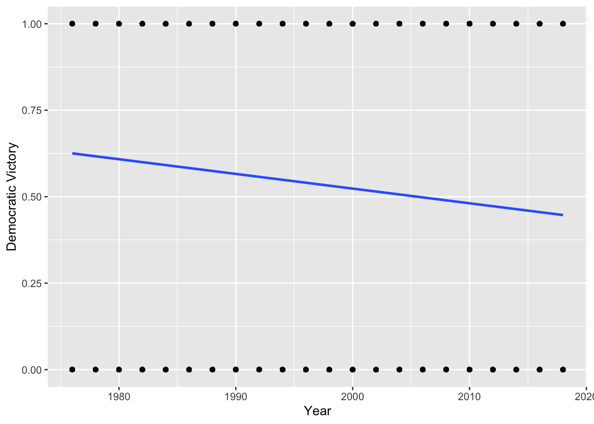
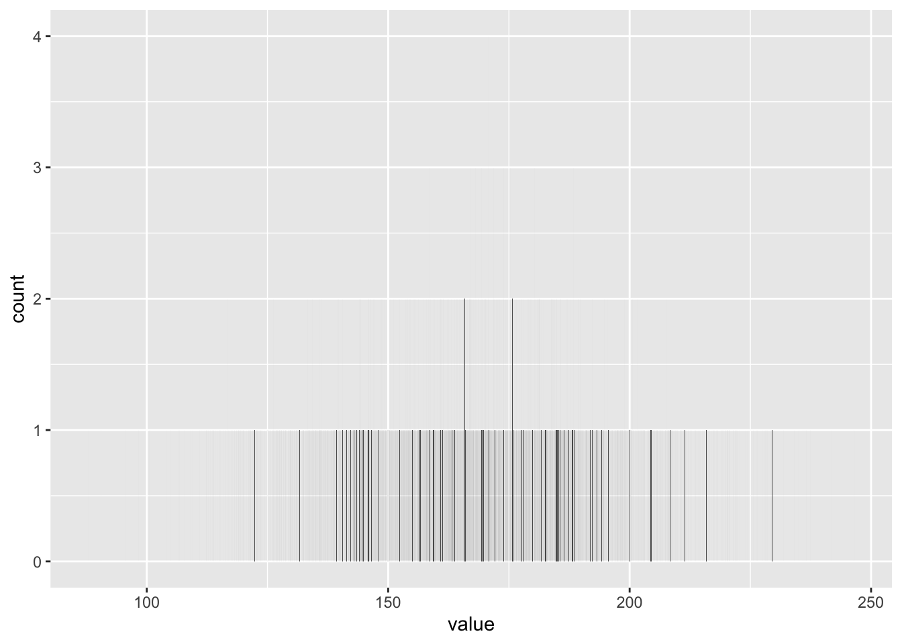
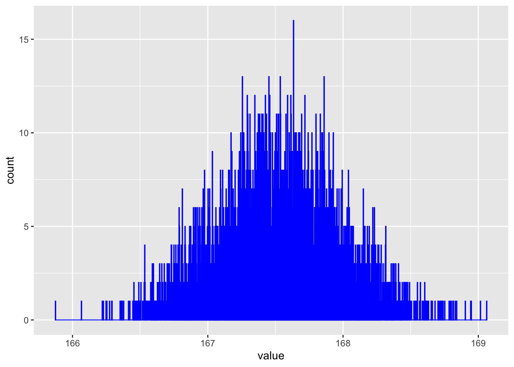

Chapter 7 Two Parameters
What is the average height of an American male? What is the 90th percentile of the distribution of height for American men? How certain are you are your estimates? If we past 5 men walking down the street, what are the odds that the tallest will be at least 5 centimeters taller than the shortest?
7.1 Pennies example
In Chapter 6, we studied sampling. We started with a “tactile” exercise where we wanted to know the proportion of balls in the urn that are red. While we could have performed an exhaustive count, this would have been a tedious process. So instead, we used a shovel to extract a sample of 50 balls and used the resulting proportion that were red as an estimate. Furthermore, we made sure to mix the urn’s contents before every use of the shovel. Because of the randomness created by the mixing, different uses of the shovel yielded different proportions red and hence different estimates of the proportion of the urn’s balls that are red.
Remember: There is a truth here. There is an urn. It has red and white balls in it. An exact, but unknown, number of the balls are red. An exact, but unknown, number of the balls are white. An exact, but unknown, percentage of the balls are red – defined as the number red divided by the sum of the number red and the number white. Our goal was to estimate that unknown percentage. We wanted to make statements about the world, even if we can never be certain that those statements are true. We will never have the time or inclination to actually count all the balls. We use the term parameter for things that exist but which are unknown. We use statistics to estimate the true values of parameters.
We then mimicked this physical sampling exercise with an equivalent virtual sampling exercise using the computer. In Subsection 6.2.4, we repeated this sampling procedure 1,000 times, using three different virtual shovels with 25, 50, and 100 slots. We visualized these three sets of 1,000 estimates in Chapter 6 and saw that as the sample size increased, the variation in the estimates decreased. We then expanded this for all sample sizes from 1 to 100.
In doing so, we constructed sampling distributions. The motivation for taking a 1,000 repeated samples and visualizing the resulting estimates was to study how these estimates varied from one sample to another; in other words, we wanted to study the effect of sampling variation. We quantified the variation of these estimates using their standard deviation, which has a special name: the standard error. In particular, we saw that as the sample size increased from 1 to 100, the standard error decreased and thus the sampling distributions narrowed. Larger sample sizes led to more precise estimates that varied less around the center.
We then tied these sampling exercises to terminology and mathematical notation related to sampling in Subsection 6.3.1. Our study population was the large urn with \(N\) = 2,400 balls, while the population parameter, the unknown quantity of interest, was the population proportion \(p\) of the urn’s balls that were red. Since performing a census would be expensive in terms of time and energy, we instead extracted a sample of size \(n\) = 50. The point estimate, also known as a sample statistic, used to estimate \(p\) was the sample proportion \(\hat{p}\) of these 50 sampled balls that were red. Furthermore, since the sample was obtained at random, it can be considered as unbiased and as representative of the population. Thus any results based on the sample could be generalized to the population. Therefore, the proportion of the shovel’s balls that were red was a “good guess” of the proportion of the urn’s balls that are red. In other words, we used the sample to draw inferences about the population.
However, as described in Section 6.2, both the physical and virtual sampling exercises are not what one would do in real life. This was merely an activity used to study the effects of sampling variation. In a real life situation, we would not take 1,000 samples of size \(n\), but rather take a single representative sample that’s as large as possible. Additionally, we knew that the true proportion of the urn’s balls that were red was 37.5%. In a real-life situation, we will not know what this value is. Because if we did, then why would we take a sample to estimate it?
An example of a realistic sampling situation would be a poll, like the Obama poll you saw in Section 6.4. Pollsters did not know the true proportion of all young Americans who supported President Obama in 2013, and thus they took a single sample of size \(n\) = 2,089 young Americans to estimate this value.
So how does one quantify the effects of sampling variation when you only have a single sample to work with? You cannot directly study the effects of sampling variation when you only have one sample. One common method to study this is bootstrapping resampling.
What if we would like, not only a single estimate of the unknown population parameter, but also a range of highly plausible values? Going back to the Obama poll article, it stated that the pollsters’ estimate of the proportion of all young Americans who supported President Obama was 41%. But in addition it stated that the poll’s “margin of error was plus or minus 2.1 percentage points.” This “plausible range” was [41% - 2.1%, 41% + 2.1%] = [38.9%, 43.1%]. This range of plausible values is what’s known as a confidence interval, which will be the focus of the later sections of this chapter.
7.1.1 To the Bank
As we did in Chapter 6, we’ll begin with a hands-on tactile activity. We almost always need the tidyverse package.
library(PPBDS.data)
library(rsample)
library(tidyverse)
library(skimr)
library(gtsummary)
library(rstanarm)PPBDS.data includes the data sets for this book. rsample includes functions for bootstrapping, the main statistical tool which will we use in this chapter.
7.1.2 What is the average year on US pennies in 2019?
Try to imagine all the pennies being used in the United States in 2019. That’s a lot of pennies! Now say we’re interested in the average year of minting of all these pennies. One way to compute this value would be to gather up all pennies being used in the US, record the year, and compute the average. However, this would be near impossible! So instead, let’s collect a sample of 50 pennies from a local bank in downtown Northampton, Massachusetts, USA as seen in the photo below
FIGURE 7.1: Collecting a sample of 50 US pennies from a local bank.

FIGURE 7.2: Collecting a sample of 50 US pennies from a local bank.

An image of these 50 pennies can be seen in below. For each of the 50 pennies starting in the top left, progressing row-by-row, and ending in the bottom right, note there is an “ID” identification variable printed in black and the year of minting printed in white.
FIGURE 7.3: 50 US pennies labelled.

Run the pennies_sample code below to extract our 50 sampled pennies.
pennies_sample <- tibble(ID = c(1:50),
year = c(2002, 1986, 2017, 1988, 2008, 1983, 2008,
1996, 2004, 2000, 1994, 1995, 2015, 1978,
1974, 2015, 2016, 1996, 1983, 1971, 1981,
1976, 1998, 2017, 1979, 1979, 1993, 2006,
1988, 1978, 2013, 1976, 1979, 1985, 1985,
2015, 1962, 1999, 2015, 1990, 1992, 1997,
2018, 2015, 1997, 2017, 1982, 1988, 2006,
2017))
pennies_sample## # A tibble: 50 x 2
## ID year
## <int> <dbl>
## 1 1 2002
## 2 2 1986
## 3 3 2017
## 4 4 1988
## 5 5 2008
## 6 6 1983
## 7 7 2008
## 8 8 1996
## 9 9 2004
## 10 10 2000
## # … with 40 more rowsThe pennies_sample data frame has 50 rows corresponding to each penny with two variables. The first variable ID corresponds to the ID labels in our table above, whereas the second variable year corresponds to the year of minting saved as a numeric variable, also known as a double (dbl).
Additionally, let’s look at what a Preceptor Table would look like in this pennies_sample example. Essentially, what we are seeing is that if you are given a random penny in 2019, we are trying to estimate what they year is for that random penny. The last row is your best guess if that random year is given, because given that we are dealing with one parameter we are only dealing with one row. This would be different with two paramters because then we would have two rows.
| Penny ID | Year |
|---|---|
| 1 | 2002 |
| 2 | 1986 |
| 3 | 2017 |
| 4 | 1988 |
| 5 | 2008 |
| 6 | 1983 |
| 7 | 2008 |
| ... | ... |
| 50 | 2017 |
| X | ? |
Based on these 50 sampled pennies, what can we say about all US pennies in 2019? Let’s study some properties of our sample by performing an exploratory data analysis. Let’s first visualize the distribution of the year of these 50 pennies using our data visualization tools from before. Since year is a numerical variable, we use a histogram to visualize its distribution.
FIGURE 7.4: Distribution of year on 50 US pennies.

Observe a slightly left-skewed distribution, since most pennies fall between 1980 and 2010 with only a few pennies older than 1970. What is the average year for the 50 sampled pennies? Eyeballing the histogram it appears to be around 1990. Let’s now compute this value exactly using our data wrangling tools from Chapter 2.
## # A tibble: 1 x 1
## mean_year
## <dbl>
## 1 1995.Thus, if we’re willing to assume that pennies_sample is a representative sample from all US pennies, a “good guess” of the average year of minting of all US pennies would be 1995.44. In other words, around 1995. This should all start sounding similar to what we did previously in Chapter 6!
After calculating our “good guess”, we can fill in the question mark for our original Preceptor Table. Essentially, any random penny in 2019, the best guess would be 1995.44.
| Penny ID | Year |
|---|---|
| 1 | 2002 |
| 2 | 1986 |
| 3 | 2017 |
| 4 | 1988 |
| 5 | 2008 |
| 6 | 1983 |
| 7 | 2008 |
| ... | ... |
| 50 | 2017 |
| X | 1995 |
In Chapter 6, our study population was the urn of \(N\) = 2400 balls. Our population parameter was the population proportion of these balls that were red, denoted by \(p\). In order to estimate \(p\), we extracted a sample of 50 balls using the shovel. We then computed the relevant point estimate: the sample proportion of these 50 balls that were red, denoted mathematically by \(\hat{p}\).
Here our population is \(N\) = whatever the number of pennies are being used in the US, a value which we don’t know and probably never will. The population parameter of interest is now the population mean year of all these pennies, a value denoted mathematically by the Greek letter \(\mu\) (pronounced “mu”). In order to estimate \(\mu\), we went to the bank and obtained a sample of 50 pennies and computed the relevant point estimate: the sample mean year of these 50 pennies, denoted mathematically by \(\overline{x}\) (pronounced “x-bar”). An alternative and more intuitive notation for the sample mean is \(\hat{\mu}\). However, this is unfortunately not as commonly used, so in this book we’ll stick with convention and always denote the sample mean as \(\overline{x}\).
We summarize the correspondence between the sampling urn exercise in Chapter 6 and our pennies exercise in Table below.
| Scenario | Population_parameter | Notation | Point_Estimate | Symbol |
|---|---|---|---|---|
1 |
Population Proportion |
$$p$$ |
Sample Proportion |
$$\hat{p}$$ |
2 |
Population mean |
$$\mu $$ |
Sample mean |
$$\overline{x}$$ or $$\hat{\mu}$$ |
3 |
Difference in population proportions |
$$p_1 - p_2$$ |
Difference in sample proportions |
$$\hat{p}_1 - \hat{p}_2$$ |
4 |
Difference in population means |
$$\mu_1 - \mu_2$$ |
Difference in sample means |
$$\overline{x}_1 - \overline{x}_2$$ |
Going back to our 50 sampled pennies, the point estimate of interest is the sample mean \(\overline{x}\) of 1995.44. This quantity is an estimate of the population mean year of all US pennies \(\mu\).
Recall that we also saw in Chapter 6 that such estimates are prone to sampling variation. For example, in this particular sample, we observed three pennies with the year 1999. If we sampled another 50 pennies, would we observe exactly three pennies with the year 1999 again? More than likely not. We might observe none, one, two, or maybe even all 50! The same can be said for the other 26 unique years that are represented in our sample of 50 pennies.
So what do we do about this sampling variation? One solution is that we create bootstrap samples! As you already know that resampling is a significant tool in data science, bootstrapping is one such resampling method that many data scientists use today. Bootstrapping essentially repeatedly draws independent samples from our data set with replacement. By sampling with replacement, the same observation can be sampled multiple times and each bootstrap sample will have the same number of observations as the original data set.
To conduct bootstraps, make sure your dowload both rsample and tidyverse libraries
Before the computer age, scientists would use direct standard error formulas and complex Taylor Series to compute confidence intervals for an estimate. However, the bootstrap was developed as an alternative to compute standard errors and confidence intervals for any statistic in a much faster and easier way.
The intuition with bootstrapping is that we can model an inference about the population from resampling our sample data and then performing an inference about a sample from each resample. It will look something like this: resampled → sample → population.
The first thing we want to do when bootstrapping is creating our bootstrap samples.Since we are concerned with the year of pennies in 2019, let’s select year in our data set before we create our bootstraps. Let’s now perform the virtual analog for 1000 resamples. Using these results, we’ll be able to study the variability in the sample means from 1000 resamples of size 50. Let’s first add a times = 1000 argument to bootstraps() to indicate we would like 1000 replicates. Remember that we must use the rsample library to use bootstraps.
set.seed(9)
virtual_resamples <- pennies_sample %>%
select(year) %>%
bootstraps(times = 1000)
virtual_resamples## # Bootstrap sampling
## # A tibble: 1,000 x 2
## splits id
## <list> <chr>
## 1 <split [50/19]> Bootstrap0001
## 2 <split [50/20]> Bootstrap0002
## 3 <split [50/16]> Bootstrap0003
## 4 <split [50/18]> Bootstrap0004
## 5 <split [50/18]> Bootstrap0005
## 6 <split [50/18]> Bootstrap0006
## 7 <split [50/17]> Bootstrap0007
## 8 <split [50/14]> Bootstrap0008
## 9 <split [50/19]> Bootstrap0009
## 10 <split [50/20]> Bootstrap0010
## # … with 990 more rowsSo we have now created our bootstrap samples, which are stored in a tibble-like object, and each bootstrap sample is nested in the splits column. This means that each rsplit row is a different bootstrap sample and the id column is used to identify each bootstrap sample.
Check out ?analysis in console to get an even more comprehensive review of what analysis() does
Now if you are interested to view a specific bootstrap sample, you can use the analysis() function from the rsample package, which basically allows you to view a specific bootstrap sample as a data frame. To do so, type analysis(virtual_resamples$splits[[n]]) %>% as_tibble() where n represents the nth row bootstrap sample. We will be looking at the first bootstrap sample in this case.
## # A tibble: 50 x 1
## year
## <dbl>
## 1 1983
## 2 2017
## 3 1983
## 4 2017
## 5 1995
## 6 1988
## 7 1978
## 8 2015
## 9 1962
## 10 1996
## # … with 40 more rowsAs you can see, we were able to view the data in first bootstrap sample. Noticed how it has 50 rows, which is the same as our pennies_sample. Now that we know how to create bootstrap samples and view them, we can apply more code to our bootstraps to find our desired statistic, which is the average year of pennies in 2019.
In this chapter, bootstrap samples and resamples mean the same thing
To compute our desired statistics, we now create the column boot by mutate(boot = map(splits, ~ analysis(.))). What we are doing here is that we are iterating an analysis over each bootstrap sample in a new sample. We want to iterate an analysis over each bootstrap sample, because analysis allows us to extract the mean year for each resample.
virtual_resamples <- pennies_sample %>%
select(year) %>%
bootstraps(times = 1000) %>%
mutate(boot = map(splits, ~ analysis(.)))
virtual_resamples## # Bootstrap sampling
## # A tibble: 1,000 x 3
## splits id boot
## <list> <chr> <list>
## 1 <split [50/19]> Bootstrap0001 <tibble [50 × 1]>
## 2 <split [50/18]> Bootstrap0002 <tibble [50 × 1]>
## 3 <split [50/20]> Bootstrap0003 <tibble [50 × 1]>
## 4 <split [50/18]> Bootstrap0004 <tibble [50 × 1]>
## 5 <split [50/19]> Bootstrap0005 <tibble [50 × 1]>
## 6 <split [50/15]> Bootstrap0006 <tibble [50 × 1]>
## 7 <split [50/13]> Bootstrap0007 <tibble [50 × 1]>
## 8 <split [50/19]> Bootstrap0008 <tibble [50 × 1]>
## 9 <split [50/20]> Bootstrap0009 <tibble [50 × 1]>
## 10 <split [50/19]> Bootstrap0010 <tibble [50 × 1]>
## # … with 990 more rowsboot is now a list-column in the tibble, which we can use if we want to find a specific characteristic of each sample like the average year. Given that boot is a list column and we want to pull out the mean year as we are interested in this, we can create two more columns: years and year_mean, respectively. To create ouryearscolumn, we runmutate(years = map(boot, ~ pull(., year)))after creating ourbootcolumn. What this does is that we are now pulling the year column of each bootstrap sample, which will evidently be nested in a list. Finally, we can create the columnyear_meanto extract the mean of each bootstrap sample by now runningmutate(year_mean = map_dbl(years, ~ mean(.))). This command line essentially calculates the mean year from theyears` list nested column.
set.seed(9)
virtual_resamples <- pennies_sample %>%
select(year) %>%
bootstraps(times = 1000) %>%
mutate(boot = map(splits, ~ analysis(.))) %>%
mutate(years = map(boot, ~ pull(., year))) %>%
mutate(year_mean = map_dbl(years, ~ mean(.)))
virtual_resamples## # Bootstrap sampling
## # A tibble: 1,000 x 5
## splits id boot years year_mean
## <list> <chr> <list> <list> <dbl>
## 1 <split [50/19]> Bootstrap0001 <tibble [50 × 1]> <dbl [50]> 1992.
## 2 <split [50/20]> Bootstrap0002 <tibble [50 × 1]> <dbl [50]> 1999.
## 3 <split [50/16]> Bootstrap0003 <tibble [50 × 1]> <dbl [50]> 1992.
## 4 <split [50/18]> Bootstrap0004 <tibble [50 × 1]> <dbl [50]> 1993.
## 5 <split [50/18]> Bootstrap0005 <tibble [50 × 1]> <dbl [50]> 1995.
## 6 <split [50/18]> Bootstrap0006 <tibble [50 × 1]> <dbl [50]> 1998.
## 7 <split [50/17]> Bootstrap0007 <tibble [50 × 1]> <dbl [50]> 1993.
## 8 <split [50/14]> Bootstrap0008 <tibble [50 × 1]> <dbl [50]> 1995.
## 9 <split [50/19]> Bootstrap0009 <tibble [50 × 1]> <dbl [50]> 1993.
## 10 <split [50/20]> Bootstrap0010 <tibble [50 × 1]> <dbl [50]> 2000.
## # … with 990 more rowsVoila! We were able to create a thousand bootstrap samples and calculate the mean year for each resample. Let’s now create a plot to visualizes the posterior distribution for the mean year of American pennies in 2019.
virtual_resamples %>%
ggplot() +
geom_histogram(aes(x = year_mean, y=..count../sum(..count..)), binwidth = .5, fill = "red") +
labs(x = "Estimate in Year", y = "Probability",
title = "Posterior Distribution for the Mean Year of American Pennies in 2019")  Recall from chapter 5 that posterior distribution is based on beliefs and expectations. In the case of the bootstrap samples we made, the posterior distribution represents our knowledge about the mean year of American Pennies in 2019 after taking into account the the data we gathered from our bootstrap sample means. As demonstrated in the plot above, we can see that the mean year of pennies in 2019 is most likely between 1995 and 1998 from our posterior distribution.
Recall from chapter 5 that posterior distribution is based on beliefs and expectations. In the case of the bootstrap samples we made, the posterior distribution represents our knowledge about the mean year of American Pennies in 2019 after taking into account the the data we gathered from our bootstrap sample means. As demonstrated in the plot above, we can see that the mean year of pennies in 2019 is most likely between 1995 and 1998 from our posterior distribution.
Recall that in the “resampling with replacement” scenario we are illustrating here, this histogram has a special name: the bootstrap distribution of the sample mean. Furthermore, recall it is an approximation to the sampling distribution of the sample mean, a concept you saw before. This distribution allows us to study the effect of sampling variation on our estimates of the true population mean, in this case the true mean year for all US pennies. However, unlike in Chapter 6 where we took multiple samples (something one would never do in practice), bootstrap distributions are constructed by taking multiple resamples from a single sample: in this case, the 50 original pennies from the bank.
Congratulations! You’ve just constructed your first bootstrap distribution! In the next section, you’ll see how to use this bootstrap distribution to construct confidence intervals.
7.1.3 Measuring uncertainty with confidence intervals
Let’s start this section with an analogy involving fishing. Say you are trying to catch a fish. On the one hand, you could use a spear, while on the other you could use a net. Using the net will probably allow you to catch more fish!
Now think back to our pennies exercise where you are trying to estimate the true population mean year \(\mu\) of all US pennies. Think of the value of \(\mu\) as a fish.
On the one hand, we could use the appropriate point estimate/sample statistic to estimate \(\mu\), which we saw in the table in the previous section, is the sample mean \(\overline{x}\). Based on our sample of 50 pennies from the bank, the sample mean was 1995.44. Think of using this value as “fishing with a spear.”
What would “fishing with a net” correspond to? Look at the bootstrap distribution we created once more. Between which two years would you say that “most” sample means lie? While this question is somewhat subjective, saying that most sample means lie between 1992 and 2000 would not be unreasonable. Think of this interval as the “net.”
What we’ve just illustrated is the concept of a confidence interval, which we’ll abbreviate with “CI” throughout this book. As opposed to a point estimate/sample statistic that estimates the value of an unknown population parameter with a single value, a confidence interval gives what can be interpreted as a range of plausible values. Going back to our analogy, point estimates/sample statistics can be thought of as spears, whereas confidence intervals can be thought of as nets.
FIGURE 7.5: Analogy of difference between point estimates and confidence intervals.

Our proposed interval of 1992 to 2000 was constructed by eye and was thus somewhat subjective. We now introduce two methods for constructing such intervals in a more exact fashion: the lm method and the quantile method.
Second, they both require you to specify the confidence level. Commonly used confidence levels include 90%, 95%, and 99%. All other things being equal, higher confidence levels correspond to wider confidence intervals, and lower confidence levels correspond to narrower confidence intervals. In this book, we’ll be mostly using 95% and hence constructing “95% confidence intervals for \(\mu\)” for our pennies activity.
Using confidence intervals, we can again look back at our Preceptor Tables. We are not entirely sure that 1995.44 is the perfect guess. However, if we use confidence intervals we can be 95% sure that whatever year we get for a penny in 2019 is the truth. Thus, we will see a confidence interval yet to be created for the “Year” of our random penny from 2019.
| Penny ID | Year |
|---|---|
| 1 | 2002 |
| 2 | 1986 |
| 3 | 2017 |
| 4 | 1988 |
| 5 | 2008 |
| 6 | 1983 |
| 7 | 2008 |
| ... | ... |
| 50 | 2017 |
| X | (?,?) |
7.1.4 Confidence Intervals using lm and quantile
First, let’s type lm(year ~ 1, data = pennies_sample) in our code chunk. This alone will get the mean of our dataset for pennies_sample
##
## Call:
## lm(formula = year ~ 1, data = pennies_sample)
##
## Coefficients:
## (Intercept)
## 1995So we see that the mean of pennies_sample is 1995. Now let’s add the line tidy(conf,int = TRUE) to our code. tidy is from the rsample package and this particular function can get the 95% confidence interval for our mean if we set the argument, conf.int = TRUE, in our tidy function.
## # A tibble: 1 x 7
## term estimate std.error statistic p.value conf.low conf.high
## <chr> <dbl> <dbl> <dbl> <dbl> <dbl> <dbl>
## 1 (Intercept) 1995. 2.15 930. 1.03e-105 1991. 2000.Great! After running the code, we can clearly see the mean of the of pennies_sample as well as other characteristics like the upper and lower levels of our confidence interval. Since we are focused on the confidence interval only, let’s just select(conf.low, estimate, conf.high).
lm(year ~ 1, data = pennies_sample) %>%
tidy(conf.int = TRUE) %>%
select(conf.low, estimate, conf.high)## # A tibble: 1 x 3
## conf.low estimate conf.high
## <dbl> <dbl> <dbl>
## 1 1991. 1995. 2000.Now we have our confidence interval for the mean year of pennies from 2019, which is (1991.127, 1999.753). But noticed that we used pennies_sample and not virtual_resamples for the lm method to calculate the confidence interval.
Let’s now calculate the confidence interval by hand using our bootstrap samples, virtual_resamples. To do, type the following code below:
## 2.5% 98%
## 1991 2000Whoa! Noticed how we got 1991.28, 1999.92 as our confidence interval, which is the same as the lm method using pennies_sample. What this shows is that we can essentially use two methods to calculate the confidence interval for the mean: the lm method using the original data set and the quantile method using our bootstrap samples! However, if we want to find the confidence interval for any statistic, not including the mean, we have to use the quantile method using our bootstrap samples!
7.2 EDA for nhanes
Run ?nhanes to get more information about the data from nhanes Shifting away from dealing with pennies, let’s look at bootstrap modeling witht the nhanes dataset. Let’s perform an exploratory data analysis (EDA) of the nhanes data set from the PPBDS.data package. The nhanes data is the data from National Health and Nutrition Examination Survey conduced by the Centers for Disease Control and Prevention and is about children and adults in America.
Load the libraries we will need in this chapter and analyze the nhanes data.
library(PPBDS.data)
library(tidyverse)
library(broom)
library(rsample)
library(skimr)
library(tidyverse)## Rows: 10,000
## Columns: 15
## $ survey <int> 2009, 2009, 2009, 2009, 2009, 2009, 2009, 2009, 2009, …
## $ gender <chr> "Male", "Male", "Male", "Male", "Female", "Male", "Mal…
## $ age <int> 34, 34, 34, 4, 49, 9, 8, 45, 45, 45, 66, 58, 54, 10, 5…
## $ race <chr> "White", "White", "White", "Other", "White", "White", …
## $ education <ord> High School, High School, High School, NA, Some Colleg…
## $ hh_income <ord> 25000-34999, 25000-34999, 25000-34999, 20000-24999, 35…
## $ weight <dbl> 87, 87, 87, 17, 87, 30, 35, 76, 76, 76, 68, 78, 75, 39…
## $ height <dbl> 165, 165, 165, 105, 168, 133, 131, 167, 167, 167, 170,…
## $ bmi <dbl> 32, 32, 32, 15, 31, 17, 21, 27, 27, 27, 24, 24, 26, 19…
## $ pulse <int> 70, 70, 70, NA, 86, 82, 72, 62, 62, 62, 60, 62, 76, 80…
## $ diabetes <int> 0, 0, 0, 0, 0, 0, 0, 0, 0, 0, 0, 0, 0, 0, 0, 0, 0, 0, …
## $ general_health <int> 3, 3, 3, NA, 3, NA, NA, 4, 4, 4, 4, 4, 2, NA, NA, 3, N…
## $ depressed <ord> Several, Several, Several, NA, Several, NA, NA, None, …
## $ pregnancies <int> NA, NA, NA, NA, 2, NA, NA, 1, 1, 1, NA, NA, NA, NA, NA…
## $ sleep <int> 4, 4, 4, NA, 8, NA, NA, 8, 8, 8, 7, 5, 4, NA, 5, 7, NA…glimpse() is a really cool function to use to get a quick peek at your data. It basically allows your data to be viewed running across rows. glimpse gives you a sense of what your data is supposed to look like. Based on the glimpse of nhanes, we see that nhanes has data on a diverse array of things like physical attributes, education, and sleep.
In our examination of nhanes, however, let’s restrict the nhanes data to a subset, focusing on year, gender, and height.
Furthermore, it is always smart to look at random samples of our data set.
## # A tibble: 5 x 3
## gender height survey
## <chr> <dbl> <int>
## 1 Female 167. 2009
## 2 Female 142. 2011
## 3 Male 145 2009
## 4 Male 153. 2011
## 5 Male 171. 2011Notice how there is a decimal in the height column of ch7 data. This is because height is in <dbl> and not <int>, so height will not be rounded up to the nearest integer.
Let’s also run glimpse to analyze our new data.
## Rows: 10,000
## Columns: 3
## $ gender <chr> "Male", "Male", "Male", "Male", "Female", "Male", "Male", "Fem…
## $ height <dbl> 165, 165, 165, 105, 168, 133, 131, 167, 167, 167, 170, 182, 16…
## $ survey <int> 2009, 2009, 2009, 2009, 2009, 2009, 2009, 2009, 2009, 2009, 20…Be on the lookout if anything looks suspicious to you. Are there any NA’s in your data set? What types of data are the columns, i.e. why is survey characterized as integer instead of double? Was most of the data collected in 2009? Are there more females than males? There will clearly be more questions to answer, but it is important that you ask these types of questions and notice anything suspicious. A good data scientist will always look thoroughly at the data.
In addition to glimpse, we can runskim on our data to get standard statistics like mean of our data.
TABLE 7.1: Data summary
| Name | Piped data |
| Number of rows | 10000 |
| Number of columns | 3 |
| _______________________ | |
| Column type frequency: | |
| character | 1 |
| numeric | 2 |
| ________________________ | |
| Group variables | None |
Variable type: character
| skim_variable | n_missing | complete_rate | min | max | empty | n_unique | whitespace |
|---|---|---|---|---|---|---|---|
| gender | 0 | 1 | 4 | 6 | 0 | 2 | 0 |
Variable type: numeric
| skim_variable | n_missing | complete_rate | mean | sd | p0 | p25 | p50 | p75 | p100 | hist |
|---|---|---|---|---|---|---|---|---|---|---|
| height | 353 | 0.96 | 162 | 20 | 84 | 157 | 166 | 174 | 200 | ▁▁▁▇▂ |
| survey | 0 | 1.00 | 2010 | 1 | 2009 | 2009 | 2010 | 2011 | 2011 | ▇▁▁▁▇ |
Interesting! Noticed how skim told us that are 353 missing values of height in our subset of data even though we could not find that out so easily using glimpse. Thus, it’s always good to use both skim and glimpse to get a gyst of what our data entails.
Since we are dealing with NA’s then, let’s filter out the NA’s using drop_na. This we will remove out the rows that have NA’s in them.
Plot your data.
ch7 %>%
ggplot(aes(x = height, color = gender)) +
geom_density() +
labs(x = "Height",
title = "Height by Gender in Nhanes Dataset") The plot shows some interesting stuff. Since the distributions of height for both genders are skewed left, we can infer that this data set included children and thus age played a role in our data. Additionally, we can see the the most probable heights for both genders and that men are generally taller than women.
7.3 Using Bootstraps with nhanes
We have shown you how to use bootstrap sampling to create confidence intervals for an unknown parameter for which you have created. In other words, we use bootstrap sampling to create our posterior distribution for the average year of pennies in the US during 2009. But we have not yet demonstrated that the bootstrap “works,” that our 95% confidence intervals provide correct coverage. The purpose of this section is to provide that demonstration.
In this demonstration, let’s play a game! Let’s first filter our data set to just males and the year 2009. We want to estimate the mean and 75th percentile of male height in the year 2009. Obviously, we already know what these statistics are since we can easily calculate them by hand. However, we want to show that the bootstrap works!
ch7_male <- nhanes %>%
filter(survey == 2009, gender == "Male") %>%
select(height) %>%
arrange(height) %>%
na.omit()Noticed how we did arrange(height), because since we know the 90th percentile is the 2,133 tallest male in the data set, it would be good to look at our data in increasing order. Furthermore, remember how nhanes had lots of NA’s. It would be good to get rid of them here. The true mean in this case is ________ and the true 90th percentile is ________.
We are now going to estimate both the true mean and 90th percentile using our bootstrap. Remember how in the pennies_sample example, we first used a sample of 50 pennies to create our bootstrap samples. Let’s do something very similar. In this case, let’s take a sample without replacement of 40 of the 2,370 males in our data and look at their heights in 2009. To do so, we run the following command:
Great! So now we have our sample of 40 male heights in 2009. Now you might wonder how this section of this chapter is different from the section with pennies_samples. Well, there are two key differences. First, we know the truth in this case, so we can examine whether or not the bootstrap works. (That is, we pull a sample of 40 and see if the bootstrap confidence interval from that 40 includes the true 90th percentile of the 2,370) Second, note that only the bootstrap will allow us to estimate statistics other than the mean. We can’t use the lm() trick we learned about for pennies as we will find the confidence interval for the 90th percentile, which is a statistic that isn’t the mean.
set.seed(9)
virtual_heights <- heights_sample %>%
select(height) %>%
bootstraps(times = 1000) %>%
mutate(boot = map(splits, ~ analysis(.))) %>%
mutate(heights = map(boot, ~ pull(., height))) %>%
mutate(height_90th = map_dbl(heights, ~ quantile(., probs = .90)))
virtual_heights## # Bootstrap sampling
## # A tibble: 1,000 x 5
## splits id boot heights height_90th
## <list> <chr> <list> <list> <dbl>
## 1 <split [40/14]> Bootstrap0001 <tibble [40 × 1]> <dbl [40]> 182.
## 2 <split [40/16]> Bootstrap0002 <tibble [40 × 1]> <dbl [40]> 182.
## 3 <split [40/13]> Bootstrap0003 <tibble [40 × 1]> <dbl [40]> 183.
## 4 <split [40/14]> Bootstrap0004 <tibble [40 × 1]> <dbl [40]> 182.
## 5 <split [40/15]> Bootstrap0005 <tibble [40 × 1]> <dbl [40]> 182.
## 6 <split [40/16]> Bootstrap0006 <tibble [40 × 1]> <dbl [40]> 182.
## 7 <split [40/15]> Bootstrap0007 <tibble [40 × 1]> <dbl [40]> 180.
## 8 <split [40/12]> Bootstrap0008 <tibble [40 × 1]> <dbl [40]> 183.
## 9 <split [40/14]> Bootstrap0009 <tibble [40 × 1]> <dbl [40]> 182.
## 10 <split [40/16]> Bootstrap0010 <tibble [40 × 1]> <dbl [40]> 182.
## # … with 990 more rowsLet’s also see the posterior distribution for the 90th percentile of male heights in 2009 by creating a ggplot.
virtual_heights %>%
ggplot() +
geom_histogram(aes(x = height_90th, y=..count../sum(..count..)), binwidth = .5, fill = "red") +
labs(x = "Estimate in 90th Percentile of Male Height", y = "Probability",
title = "Posterior Distribution for the 90th Percentile of Male Heights in 2009") 
We have just created the posterior distribution of the 90th percentile from our bootstraps. The histogram appears to be skewed to the right. Frankly, the posterior distribution looks weird, but that is okay because the posterior distribution includes the truth.
DK: Discuss our posterior distribution of the 90th percentile. Why it is weird. Does it include the truth in the 95% interval? Yes!
7.4 Show that Bootstrap Works
Suppose we want to set a 95% confidence interval on the 90th percentile, the true parameter value for the real population. We have taken 1000 bootstrap samples. The bootstrap method suggests that approximately 95% of the time, the true parameter value for 90th percentile falls between the 2.5th percentile of the bootstrap samples and the 97.5th percentile. In general, a 95% confidence interval indicates that if 1000 bootstrap samples are taken and a 95% confidence interval is calculated for each resample, then approximately 950 of the 1000 confidence intervals will contain the truth. Sometimes, however, we may take just one bootstrap sample and calculate its confidence interval, but this confidence interval may or may not contain the truth. In other words, the confidence interval generated from that bootstrap sample can over- or underestimate the true value. That is why statisticians usually run many samples like a thousand to see if 95% of the confidence intervals generated contain the truth.
In this case, we have created 1000 bootstrap samples, and we want to show that the bootstrap works, we will be creating a confidence interval for the 90th percentile for each bootstrap sample. One way to create a confidence interval for each bootstrap function is through a function. Notice how the function we created is basically the same as the bootstrap code, but we have just added a line to create the confidence interval for each bootstrap sample.
do_the_bootstrapci <- function(x){
x %>%
select(height) %>%
bootstraps(times = 1000) %>%
mutate(boot = map(splits, ~ analysis(.))) %>%
mutate(heights = map(boot, ~ pull(., height))) %>%
mutate(height_90th = map_dbl(heights, ~ quantile(., probs = 0.90))) %>%
pull(height_90th) %>%
quantile(., c(0.025, 0.975))
}Let’s not create a tibble to show whether the true value is within each confidence interval generated.
set.seed(9)
sims <- 100
bootstrapchecks <- tibble(ID = 1:sims) %>%
mutate(heights_samples = map(ID, ~ sample_n(ch7_male, 40, replace = FALSE))) %>%
mutate(ci = map(heights_samples, ~ do_the_bootstrapci(.))) %>%
mutate(within_ci = map_lgl(ci, ~ ifelse(between(184.3, ci[[1]][1], ci[[1]][2]), TRUE, FALSE)))
bootstrapchecks## # A tibble: 100 x 4
## ID heights_samples ci within_ci
## <int> <list> <list> <lgl>
## 1 1 <tibble [40 × 1]> <dbl [2]> TRUE
## 2 2 <tibble [40 × 1]> <dbl [2]> TRUE
## 3 3 <tibble [40 × 1]> <dbl [2]> TRUE
## 4 4 <tibble [40 × 1]> <dbl [2]> TRUE
## 5 5 <tibble [40 × 1]> <dbl [2]> TRUE
## 6 6 <tibble [40 × 1]> <dbl [2]> TRUE
## 7 7 <tibble [40 × 1]> <dbl [2]> TRUE
## 8 8 <tibble [40 × 1]> <dbl [2]> TRUE
## 9 9 <tibble [40 × 1]> <dbl [2]> TRUE
## 10 10 <tibble [40 × 1]> <dbl [2]> TRUE
## # … with 90 more rowsWe have created a tibble, which indicates whether the truth is within the CI or not. To get an understanding of the coding behind the tibble, we created an ID for each bootstrap sample and coded the creation of bootstrap samples in the next line. We then created the ci of each bootstrap sample, by using function we created. Lastly, we created within_ci by using a standard ifelse statement. The reason why we use map_lgl is that we want to return a logical (or alphabetic) vector.
Of the 100 bootstrap analyses we completed, each starting with a different sample of 40 rows from the nhanes data, 100 calculated a 95% confidence interval included the true 90th percentile of 184.3.
All our confidence intervals contained true 90th percentile, 184.3 cm! We can conclude from our results that the bootstrap does, in fact, work!
7.5 Watch me wave my hands
In this sense, the bootstrap distribution represents an (approximate) nonparametric, noninformative posterior distribution for our parameter. But this bootstrap distribution is obtained painlessly — without having to formally specify a prior and without having to sample from the posterior distribution. Hence we might think of the bootstrap distribution as a “poor man’s” Bayes posterior. By perturbing the data, the bootstrap approximates the Bayesian effect of perturbing the parameters, and is typically much simpler to carry out. — Elements of Statistical Learning, 2nd edition, by Hastie et al, page 271.
Did we mention that this book is still a bit of a mess? Well, it is! And, in the entire book, this section is the messiest mess of them all. Forgive us.
The mess centers on the transition we are now making between the bootstrap and the full scale Bayesian approach. The margin note provides a bit of a justification. For now, that is all we have. So, watch us wave our hands and pretend that we have justified the leap we are about to take.
First, if you understand the concept of a posterior probability distribution as explained in Chapter 5 and, second, if you follow our demonstration that the bootstrap generates posterior distributions, then . . . . hand wave vigorously . . . third, you should be confortable going on to the standard Bayesian modeling approach that we will use for the next few chapters.
7.6 stan_glm()
Fortunately for us, Bayesian models are not hard to execute in R. Sticking to same the filtered male 2009 data from the bootstrap example, this line of code would be able to perform a bayesian generalized linear model to estimate the mean height. This function comes from the rstanarm package, which is very useful for bayesian models.
ch7_male <- nhanes %>%
filter(survey == 2009, gender == "Male") %>%
select(height) %>%
arrange(height) %>%
na.omit()
mod.obj <- stan_glm(data = ch7_male, height ~ 1)##
## SAMPLING FOR MODEL 'continuous' NOW (CHAIN 1).
## Chain 1:
## Chain 1: Gradient evaluation took 0.001122 seconds
## Chain 1: 1000 transitions using 10 leapfrog steps per transition would take 11.22 seconds.
## Chain 1: Adjust your expectations accordingly!
## Chain 1:
## Chain 1:
## Chain 1: Iteration: 1 / 2000 [ 0%] (Warmup)
## Chain 1: Iteration: 200 / 2000 [ 10%] (Warmup)
## Chain 1: Iteration: 400 / 2000 [ 20%] (Warmup)
## Chain 1: Iteration: 600 / 2000 [ 30%] (Warmup)
## Chain 1: Iteration: 800 / 2000 [ 40%] (Warmup)
## Chain 1: Iteration: 1000 / 2000 [ 50%] (Warmup)
## Chain 1: Iteration: 1001 / 2000 [ 50%] (Sampling)
## Chain 1: Iteration: 1200 / 2000 [ 60%] (Sampling)
## Chain 1: Iteration: 1400 / 2000 [ 70%] (Sampling)
## Chain 1: Iteration: 1600 / 2000 [ 80%] (Sampling)
## Chain 1: Iteration: 1800 / 2000 [ 90%] (Sampling)
## Chain 1: Iteration: 2000 / 2000 [100%] (Sampling)
## Chain 1:
## Chain 1: Elapsed Time: 0.026464 seconds (Warm-up)
## Chain 1: 0.190381 seconds (Sampling)
## Chain 1: 0.216845 seconds (Total)
## Chain 1:
##
## SAMPLING FOR MODEL 'continuous' NOW (CHAIN 2).
## Chain 2:
## Chain 2: Gradient evaluation took 1.8e-05 seconds
## Chain 2: 1000 transitions using 10 leapfrog steps per transition would take 0.18 seconds.
## Chain 2: Adjust your expectations accordingly!
## Chain 2:
## Chain 2:
## Chain 2: Iteration: 1 / 2000 [ 0%] (Warmup)
## Chain 2: Iteration: 200 / 2000 [ 10%] (Warmup)
## Chain 2: Iteration: 400 / 2000 [ 20%] (Warmup)
## Chain 2: Iteration: 600 / 2000 [ 30%] (Warmup)
## Chain 2: Iteration: 800 / 2000 [ 40%] (Warmup)
## Chain 2: Iteration: 1000 / 2000 [ 50%] (Warmup)
## Chain 2: Iteration: 1001 / 2000 [ 50%] (Sampling)
## Chain 2: Iteration: 1200 / 2000 [ 60%] (Sampling)
## Chain 2: Iteration: 1400 / 2000 [ 70%] (Sampling)
## Chain 2: Iteration: 1600 / 2000 [ 80%] (Sampling)
## Chain 2: Iteration: 1800 / 2000 [ 90%] (Sampling)
## Chain 2: Iteration: 2000 / 2000 [100%] (Sampling)
## Chain 2:
## Chain 2: Elapsed Time: 0.030203 seconds (Warm-up)
## Chain 2: 0.184224 seconds (Sampling)
## Chain 2: 0.214427 seconds (Total)
## Chain 2:
##
## SAMPLING FOR MODEL 'continuous' NOW (CHAIN 3).
## Chain 3:
## Chain 3: Gradient evaluation took 1e-05 seconds
## Chain 3: 1000 transitions using 10 leapfrog steps per transition would take 0.1 seconds.
## Chain 3: Adjust your expectations accordingly!
## Chain 3:
## Chain 3:
## Chain 3: Iteration: 1 / 2000 [ 0%] (Warmup)
## Chain 3: Iteration: 200 / 2000 [ 10%] (Warmup)
## Chain 3: Iteration: 400 / 2000 [ 20%] (Warmup)
## Chain 3: Iteration: 600 / 2000 [ 30%] (Warmup)
## Chain 3: Iteration: 800 / 2000 [ 40%] (Warmup)
## Chain 3: Iteration: 1000 / 2000 [ 50%] (Warmup)
## Chain 3: Iteration: 1001 / 2000 [ 50%] (Sampling)
## Chain 3: Iteration: 1200 / 2000 [ 60%] (Sampling)
## Chain 3: Iteration: 1400 / 2000 [ 70%] (Sampling)
## Chain 3: Iteration: 1600 / 2000 [ 80%] (Sampling)
## Chain 3: Iteration: 1800 / 2000 [ 90%] (Sampling)
## Chain 3: Iteration: 2000 / 2000 [100%] (Sampling)
## Chain 3:
## Chain 3: Elapsed Time: 0.029287 seconds (Warm-up)
## Chain 3: 0.180986 seconds (Sampling)
## Chain 3: 0.210273 seconds (Total)
## Chain 3:
##
## SAMPLING FOR MODEL 'continuous' NOW (CHAIN 4).
## Chain 4:
## Chain 4: Gradient evaluation took 1.7e-05 seconds
## Chain 4: 1000 transitions using 10 leapfrog steps per transition would take 0.17 seconds.
## Chain 4: Adjust your expectations accordingly!
## Chain 4:
## Chain 4:
## Chain 4: Iteration: 1 / 2000 [ 0%] (Warmup)
## Chain 4: Iteration: 200 / 2000 [ 10%] (Warmup)
## Chain 4: Iteration: 400 / 2000 [ 20%] (Warmup)
## Chain 4: Iteration: 600 / 2000 [ 30%] (Warmup)
## Chain 4: Iteration: 800 / 2000 [ 40%] (Warmup)
## Chain 4: Iteration: 1000 / 2000 [ 50%] (Warmup)
## Chain 4: Iteration: 1001 / 2000 [ 50%] (Sampling)
## Chain 4: Iteration: 1200 / 2000 [ 60%] (Sampling)
## Chain 4: Iteration: 1400 / 2000 [ 70%] (Sampling)
## Chain 4: Iteration: 1600 / 2000 [ 80%] (Sampling)
## Chain 4: Iteration: 1800 / 2000 [ 90%] (Sampling)
## Chain 4: Iteration: 2000 / 2000 [100%] (Sampling)
## Chain 4:
## Chain 4: Elapsed Time: 0.025643 seconds (Warm-up)
## Chain 4: 0.194061 seconds (Sampling)
## Chain 4: 0.219704 seconds (Total)
## Chain 4:Similarly to the bootstrap method we just went over, this model is taking serveral resamples of the data when anayzing the distribution of heights in our data to create a posterior distribution. Each resample or simulation is its own model of two parameters (an intercept and sigma). The best way to see this is to convert the model into a matrix with the as.matrix() function. As you can see below, the outputted matrix shows you the interept and sigma of each simulation
If you want to get into the specifics, the function is using sampling via the Markov chain Monte Carlo. While an in depth explanation of this sampling method is beyond the scope of the class, you can read up more on both the function and its algorithm here https://mc-stan.org/rstanarm/reference/stan_glm.html if interested.
## stan_glm
## family: gaussian [identity]
## formula: height ~ 1
## observations: 2370
## predictors: 1
## ------
## Median MAD_SD
## (Intercept) 167.5 0.4
##
## Auxiliary parameter(s):
## Median MAD_SD
## sigma 21.8 0.3
##
## ------
## * For help interpreting the printed output see ?print.stanreg
## * For info on the priors used see ?prior_summary.stanregWhen you output the model by itself
In essence, chains 1-4 of the output are sampling in a method similar to the bootstrap that we did to give us the main parameters of the model: the intercept and the sigma. Because all of these cacuation lines are not necessary to understanding our model, you can include refresh=0 in the function and assign it to an object to have a much cleaner output like the one below
## stan_glm
## family: gaussian [identity]
## formula: height ~ 1
## observations: 2370
## predictors: 1
## ------
## Median MAD_SD
## (Intercept) 167.5 0.4
##
## Auxiliary parameter(s):
## Median MAD_SD
## sigma 21.8 0.3
##
## ------
## * For help interpreting the printed output see ?print.stanreg
## * For info on the priors used see ?prior_summary.stanregNow that have a much cleaner output, we can more easily understand what this model spit out at us. The first few lines remind us that we performed a bayesian generalized linear model of 1 predictor, height, with a gaussian distribution on a dataset of 2370 people. It is useful to know that a Gaussian, or normal, distribution is a probability distribution that is symmetric about the mean, showing that data near the mean are more frequent than data far from it.
Under that, we see the output for the two parameters of the model: intercept and sigma. For each parameter, there is a calculated point estimate (medians computed through the simulation) and uncertainty estimates (standard deviations) of these point estimates. This is the case because we cannot be sure what the actual point estimate of the parameter is, but running many simulations through the model can give us an idea of how certain our calculated point estimate is. For a lot of Bayesian inferencing, our uncertainty estimate for each parameter will be calculated using MAD SD, the median absolute deviation.
7.7 Diving into MAD_SD
As previously mentioned, MAD SD is a measure of uncertainty, similar to standard error which has been previously mentioned in the book. In fact MAD SD is a more robust measure than standard error becaue standard error is calculated by squaring ditances from data points to the model, which means outliers will more strongly skew data.
MAD SD is computed by scaling the median absolute deviation from the posterior medians, but what does this even mean? Let’s dive deeper with an example
Here below, we have a vector of 9 numbers, which could represent anything, like the ages of children at a park.
The first step of calculating MAD SD is to calculate MAD, which can be seen with this equation.
\[ MAD = median(|Yi – median(Yi|) \]
The first step to doing this is first finding the median of the vector (which in this case is 3) and subtracting it from each value. This gives you a vector where each number is the distance from the original the the median of all the differences. Importantly, all of these distances should be the same sign, since we care about distance more than direction, thus we take the absolute value of them.
At this point, we have a list of numbers which represent that difference between the original numbers and the median
## [1] 0 1 2 5 1 2 1 2 2The last step in calculating MAD is to take the median of those differenes, which in this case gives us 2
Lastly, because it is very useful in data analysis to be able to compare things to standard deviations, we usually rescale the median absolute deviation by multiplying it by 1.483, which reproduces the standard error if the data is normally distributed and can be calculated with the mad() equation
## [1] 3## [1] 3Thus, the full equation of MAD SD is
\[ MADsd = 1.483 * median(|Yi – median(Yi|) \]
Before moving on to the next section of this chapter, take a second to make sure you understand what MAD SD and how it is calculated - it will play a very big role in demonstrating the uncertainty of most of our future parameters in the book
The first step to doing this is first finding the median of the vector (which in this case is 3) and subtracting it from each value. This gives you a vector where each number is the distance from the original the the median of all the differences. Importantly, all of these distances should be the same sign, since we care about distance more than direction, thus we take the absolute value of them.
At this point, we have a list of numbers which represent that difference between the original numbers and the median
## [1] 0 1 2 5 1 2 1 2 2The last step in calculating MAD is to take the median of those differenes, which in this case gives us 2
Lastly, because it is very useful in data analysis to be able to compare things to standard deviations, we usually rescale the median absolute deviation by multiplying it by 1.483, which reproduces the standard error if the data is normally distributed and can be calculated with the mad() equation
## [1] 3## [1] 3Thus, the full equation of MAD SD is
\[ MADsd = 1.483 * median(|Yi – median(Yi|) \]
Before moving on to the next section of this chapter, take a second to make sure you understand what MAD SD and how it is calculated - it will play a very big role in demonstrating the uncertainty of most of our future parameters in the book
7.8 Unpacking the first parameter: the intercept
## stan_glm
## family: gaussian [identity]
## formula: height ~ 1
## observations: 2370
## predictors: 1
## ------
## Median MAD_SD
## (Intercept) 167.5 0.4
##
## Auxiliary parameter(s):
## Median MAD_SD
## sigma 21.8 0.3
##
## ------
## * For help interpreting the printed output see ?print.stanreg
## * For info on the priors used see ?prior_summary.stanregNow that we understand MAD SD, we can understand the rest of the output of our mean height model. Since we are trying to find a constant to predict mean height, the intercept of the model can be interpreted as the model’s best estimate of the mean height in the dataset. Recall that the stan_glm() function took many different resamples and found the mean of each one. The most accurate estimate of what the true mean actually is the Baysesian point estimate, the median of these means which in this case happends to be 167.5. In this case, the MAD_SD for the intercept is .4, meaning that the standard deviation of the posterior distribution of mean heights is .4. As a rule of thumb, the smaller the MAD_SD, the less variation there is among mean heights in the samples generated, and thus the more robust our estimate is.
## `stat_bin()` using `bins = 30`. Pick better value with `binwidth`.
7.9 Unpacking the second parameter: sigma
The second parameter, sigma, will be outputted for all bayesian models you compute (no matter how many predictors) and shows us the average error of the model. Another way of conceptualizing this parameter is as the deviation between the predicted value and the observed value. More specifically, sigma, the residual standard error, tells us that the mean height of males will be between plus or minus 21.8 of our prediction 68% of the time and plus or minus two times 21.8 the prediction about 95% of the time. Similar to with the intercept, the MAD_SD of the sigma reflects the standard deviation of the sigma value itself (since so many different samples were taken with each its own sigma)
## `stat_bin()` using `bins = 30`. Pick better value with `binwidth`.
7.10 Comparing lm and stan_glm
Both the lm() and stan_glm() functions can be used to to create linear models. The reason this textbook is focusing on stan_glm() is through running serveral simulations of the model, it can represent uncertainty ina much more accurate way. Additionally, by performing Bayesian inference, this function also leads to more stable estimates and predictions that can be based on priors. A discussion on priors and Bayesian inference in general is beyond the scope of the chapter, but in all essence a prior is some previous information that you bring to the table when creating a sort of model that can influence how you create the model.
7.11 Visualizing the results of the linear model
While the output of the stan_glm() function is helpful, it is many times crucial to visualize our results. One way that we can do this is by taking the output of the model and putting it into a nice table. A great package to specifically visualize these tpye of Bayesian models is the stargazer package, which comes with the stargazer() function seen below
The results of the bayesian linera model can also be seen with the posterior linpred function, which give a fitted model with a matrix of the estimates probabilites.
## Instead of posterior_linpred(..., transform=TRUE) please call posterior_epred(), which provides equivalent functionality.From this matrix, you can use the ggplot function to create a histogram showing the distribution of mean heights across all of the samples. Looking at the histogram, it seems like the mean point estimate is between 167 and 168, which makes a lot of sense considering our median point estimate is 167.5
mod.obj_linpred[,3] %>%
as_tibble() %>%
ggplot(aes(value)) +
geom_histogram(binwidth = 0.002, color = "blue")
Another useful tool in the rstanarm package is posterior predict, which can make predictions on new data using our model. This becomes even more useful when working with more parameters, as you will see in Chapter 8.
mod.obj_predict <- posterior_predict(mod.obj, transform = TRUE)
mod.obj_predict[,3] %>%
as_tibble() %>%
ggplot(aes(value)) +
geom_histogram(binwidth = 0.002)
7.12 Wisdom

Let’s look at how our key theme, Wisdom, fits in with two-parameter estimates. Just like in the previous chapter, Wisdom covers the relevance of the estimands and the map from concept to data.
In our NHANES data, we focused on the mean and 90th percentile of male heights. We can easily extract both estimands from our bootstrap samples. However, are these estimands accurately capturing what we care about? Probably, but we are not fully sure. What we want optimally is if we can accurately predict the mean and 90th percentile of male heights in the US. We want a model that should generalize its points of interests and include all predictors. For example, with regard to the outcome variable, a model of heights will not necessarily tell you about patterns of male heights.
Our problem, estimating both mean and 90th percentile of male heights, is by taking care of our confounding variables.
First, there are both genders in the data. We had to adjust for that by filtering to only men. Additionally, males have a certain age range, typically above 18 years old. We also had to account for that. By using bootstraps, we were able to use random samples to thus help get more representative samples.
Second, it’s important to understand that data is always missing. We could easily calculate our estimands through arithmetic means, but because we don’t have perfect data we will have to estimate. In this case, by using bootstrap samples we were able to create confidence intervals to give us some quantitative measure of confidence.
7.13 Justice

Let’s try to understand the math behind our height model. For one, height is normally distributed because our data is continuous. Unlike in the previous chapter where data is discrete, we are dealing with continuous data. In addition, we can find the mean height and standard deviation of height, both of which are parameters for the normal distribution. Therefore, we will see the following:
\[ height_i \sim N(\beta, \sigma^2)\] But what about the standard error in our data. What does its distribution look like? Well the distribution of our standard error is also normally distributed. This is because the errors from our bootstrap samples are random and continuous, which will also follow a normal distribution.
\[ \epsilon_i \sim N(0, \sigma^2)\] Standard deviation of the bootstrap is the same thing as \(\sigma\).
7.14 Courage

In data science, we deal with words, math, and code. The most important term is code. We need some sort of framework to detail the structure of our model using all three terms. However, Courage is needed to implement the coded model.
The data we have seen is generated by the complex and confusing world. We have to build a model to create some sort of computational mechanism that creates fake data that is consistent with the real, true data in the world. This is our “Data Generating Mechanism,” which provides predictions and uncertainty.
We need a “machine” that generates our predictions, which is the same thing as a machine which fills in all the question marks in the Actual Preceptor Table and provides confidence intervals, which is the same thing as a machine which produces “fake data” which looks a lot like our actual data.
We are ultimately looking at our code and uncertainty under Courage.
7.15 Temperance
Temperance is probably the most important virtue in data science. We won’t have the models that look as good as they appear. We are living in a constantly changing and complex world. There will be unknown unknowns, which factors in the representation of our data, realism in our assumptions, and the call for testing.
In data science, we are focused on that missing data, the data from the future. But the world is always changing, and so it’s hard to capture that missing data. Our predictions are going to have some sort of uncertainty.
In the case of male heights, what would be the average male height if the data was collected a week later? What if there was a pandemic? What if the world lost a great amount of Vitamin D? As you can see, there are events that are considered unknown unknowns. It’s so hard to account for the future, and so our models are likely going to be wrong.
Another reason why we deal with Temperance in data science is that there is realism. Does the structure of our bootstrap match the world? While we hope we won’t be wrong, it never matches frankly and we will see that our conclusions are wrong.
Last but not least, getting the wrong conclusions suck. But at least we are not dealing with null hypotheses. Playing the prediction game could be fun, but if we reject the null hypothesis if p is less than .05, what if we get .06 as our p-value? Will that honestly make a difference? Probably not!
Page built: 2020-09-23